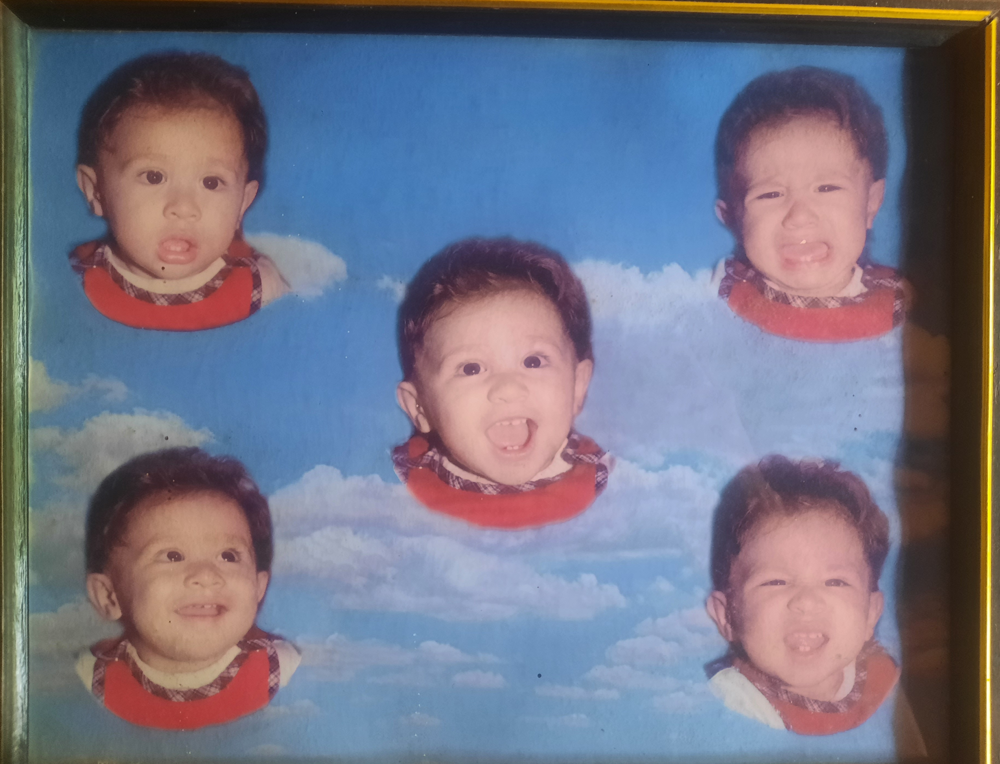

Nacimiento
Mi nombre completo es Julio César Contreras Cañas, la mayoría me llama Julio, aunque mis amigos más cercanos me suelen llamar César. Nací el 16 de junio de 2004, en el departamento de San Salvador, El Salvador, en el hospital Rosales.

Mi nombre completo es Julio César Contreras Cañas, la mayoría me llama Julio, aunque mis amigos más cercanos me suelen llamar César. Nací el 16 de junio de 2004, en el departamento de San Salvador, El Salvador, en el hospital Rosales.
El color de mi cabello, al igual que el de mis ojos, es un café oscuro. De piel blanca, complexión delgada y una altura de 1.78m. Me considero una persona deportista y en buen estado físico. Soy responsable, inteligente y gracioso.
Comencé mi educación en el kínder Paraíso Infantil, ubicado en Santa Tecla. Una vez terminada esta etapa, hice los exámenes de admisión en el Centro Escolar Católico Alberto Masferrer, donde cursé desde primer grado hasta graduarme de bachillerato.
Hijo de Sabrina Cañas y Julio Contreras, ambos ingenieros graduados de la Escuela Nacional de Agricultura “Roberto Quiñonez”.
Son personas trabajadoras, de gran corazón y amantes de los animales (en especial de los animales de granja).
Fernanda Beatriz Contreras Cañas, llamada “Princesa” por algunos (mis papás) y “Víbora” por otros (yo), es mi hermana mayor. Actualmente, se encuentra cursando su quinto año en la carrera de medicina en la Universidad José Matías Delgado.
Por último, tenemos a Goldencito, un rottweiler que me ha alegrado la vida por 11 años. Es juguetón, inteligente y muy protector con los miembros de la familia, aunque a veces me cae mal porque me cabecea y me estornuda en las piernas.
Me encuentro estudiando ingeniería en desarrollo de software en la Escuela Superior de Economía y Negocios. Juego y practico básquetbol con el equipo de mi universidad y suelo ir al gimnasio unas 4 veces por semana.